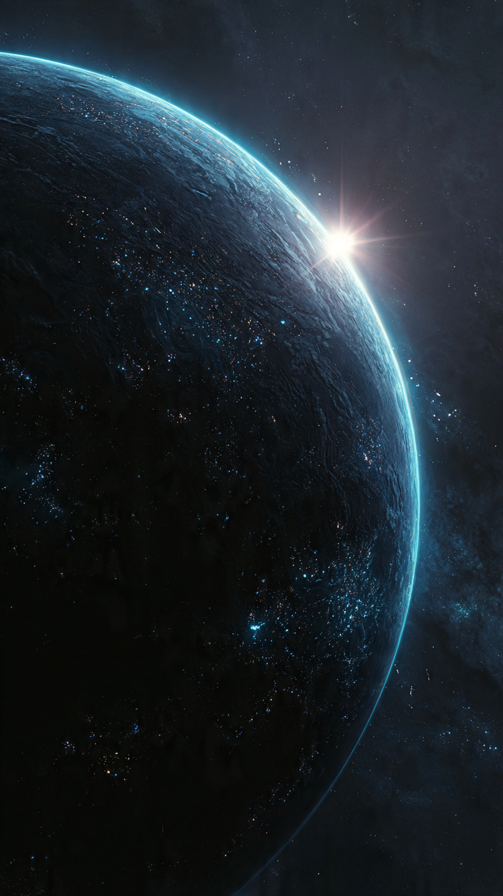
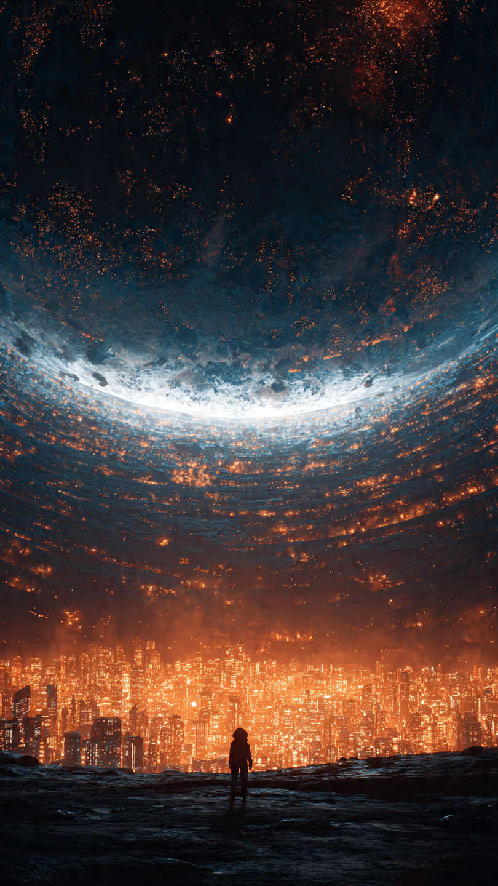

منذ بداية استكشاف الفضاء، عرف البشر آلاف الكواكب.
بعضها كان مليئًا بالأنهار.
وبعضها مغطى بالجليد.
وبعضها لا يحتوي إلا على صخور قاحلة.
لكن بين كل تلك الكواكب...
كان هناك كوكب واحد لم يظهر في أي خريطة.
كوكب لا يرسل إشارات.
ولا يعكس ضوء النجوم.
وكأنه غير موجود.
أطلق عليه العلماء اسم:
"الكوكب المظلم".
كان الاعتقاد السائد أن هذا الكوكب مجرد أسطورة.
حتى وصلت إشارة غريبة إلى مركز أبحاث الفضاء.
لم تكن مثل أي إشارة عادية.
كانت عبارة عن نمط متكرر من النبضات، وكأن أحدًا يحاول إرسال رسالة منذ آلاف السنين.
وبعد تحليلها، اكتشف العلماء شيئًا مذهلًا.
الإشارة لم تأتِ من مكان بعيد في المجرة...
بل من كوكب قريب نسبيًا لم يعرف أحد بوجوده.
كان من بين الفريق العلمي رائد فضاء شاب يُدعى آدم.
كان شغوفًا باكتشاف المجهول.
وعندما عرضت عليه مهمة الوصول إلى الكوكب المظلم، لم يتردد.
قال:
"إذا كان هناك شخص يحاول التواصل معنا..."
"فمن حقه أن نسمعه."
انطلقت سفينة آدم في رحلة طويلة عبر الفضاء.
مرت بجانب كواكب لم يزرها البشر من قبل.
وشاهد نجومًا تولد وتموت.
لكن كلما اقترب من الكوكب الغامض...
بدأت أجهزة السفينة تتصرف بطريقة غريبة.
تعطلت بعض الأنظمة.
وتغيرت مسارات الملاحة.
وكأن الكوكب لا يريد أن يقترب منه أحد.
بعد أسابيع من السفر، ظهر الكوكب أمامه.
كان أكبر مما توقع.
سطحه مظلم بالكامل.
لا توجد قارات مضيئة.
ولا محيطات تعكس النجوم.
فقط ليل أبدي.
هبط آدم بالسفينة على سطحه.
وعندما فتح الباب...
شعر بشيء لم يشعر به من قبل.
لم يكن الظلام مخيفًا.
بل كان هادئًا.
وكأنه يخفي قصة طويلة.
سار آدم بين الجبال السوداء حتى وجد مدينة.
لكنها لم تكن مدينة عادية.
كانت مبانيها شفافة، وتحتوي على مصادر ضوء زرقاء بدلًا من الشمس.
خرج سكانها لاستقباله.
كانوا يشبهون البشر، لكن عيونهم كانت تلمع بلون فضي.
اقترب منه شخص كبير في السن وقال:
"لقد انتظرناك طويلًا."
نظر آدم إليه بدهشة.
وقال:
"كيف تعرفون من أنا؟"
ابتسم الرجل وأجاب:
"لأننا نحن من أرسلنا الإشارة."
📷 الصورة رقم 1

نظر آدم إلى الرجل العجوز بدهشة.
لم يفهم كيف يمكن لسكان هذا الكوكب أن يعرفوا اسمه، أو كيف استطاعوا إرسال رسالة إلى الأرض منذ آلاف السنين.
قال:
"من أنتم؟"
أجابه الرجل:
"نحن سكان كوكب نوفارا."
"كنا نعيش تحت ضوء شمس عظيمة..."
"حتى حدث ما غيّر كل شيء."
قاد الرجل آدم عبر المدينة.
كانت الشوارع هادئة، لكن كل شيء فيها كان متطورًا بطريقة لم يرها البشر من قبل.
مركبات تتحرك دون وقود.
مبانٍ تستخدم طاقة غريبة.
وأجهزة تستطيع تخزين ذكريات البشر بدلًا من المعلومات فقط.
لكن أكثر شيء أثار انتباه آدم...
هو عدم وجود أي نافذة في المباني.
سأل:
"لماذا لا توجد أماكن مفتوحة؟"
توقف الرجل للحظة.
ثم قال:
"لأننا لم نرَ السماء منذ ألف عام."
وصلوا إلى قاعة ضخمة في وسط المدينة.
وفي داخلها كان هناك جهاز عملاق يشبه كرة من الضوء محاطة بآلاف الأسلاك.
قال الرجل:
"هذه هي حارسة الكوكب."
"هي التي تحمينا من الظلام."
اقترب آدم منها.
فشعر بطاقة قوية تشبه حرارة الشمس.
قال:
"لكن لماذا تحتاجون إلى هذه الآلة؟"
نظر الرجل إلى السماء المظلمة وقال:
"لأن شمسنا لم تختفِ..."
"بل تم إخفاؤها."
فتح الرجل شاشة ضخمة.
ظهرت عليها صور قديمة للكوكب.
كان نوفارا في الماضي مليئًا بالغابات والبحار.
وكانت هناك شمس عملاقة تشرق عليه.
لكن في يوم واحد...
ظهر جسم غامض في الفضاء.
شيء لم يكن كوكبًا ولا نجمًا.
شيء يمتص الضوء.
اقترب من الشمس، وحجب نورها بالكامل.
ومنذ ذلك اليوم...
عاش الكوكب في الظلام.
قال آدم:
"ولماذا لم تغادروا الكوكب؟"
أجاب الرجل:
"حاولنا."
"لكن ذلك الشيء وضع حول الكوكب حاجزًا يمنع أي سفينة من المغادرة."
ثم نظر إليه بجدية.
وأضاف:
"ولهذا أرسلنا الإشارة إلى البشر."
"أنتم الوحيدون الذين لم يلمسهم الحاجز."
فجأة اهتزت المدينة.
وانطفأت الأضواء الزرقاء للحظات.
ثم ظهرت على الشاشات علامة سوداء ضخمة.
تغير وجه الرجل العجوز.
وقال بخوف:
"لقد اكتشفوا وصولك."
نظر آدم إلى الشاشة.
فرأى جسمًا هائلًا يقترب من الكوكب.
ولم يكن نجمًا...
ولا كوكبًا.
بل كان شيئًا يتحرك وكأنه كائن حي.
ثم ظهر صوت داخل المدينة يقول:
"لقد وجدنا مصدر الإشارة...""وسيتم إنهاء آخر محاولة للهرب."
📷 الصورة رقم 2

ساد الصمت في مدينة نوفارا.
كان الجميع ينظر إلى السماء المظلمة، بينما يقترب ذلك الجسم الغامض ببطء.
بدأت صفارات الإنذار تدوي في كل مكان.
قال الرجل العجوز:
"لقد عاد..."
سأله آدم:
"من هو؟"
نظر الرجل إلى الأعلى وقال:
"اسمه حارس الظلام."
"لكنه ليس حارسًا كما يوحي اسمه."
"إنه كائن قديم وُجد قبل ظهور معظم النجوم."
دخل آدم مع العلماء إلى غرفة التحكم الرئيسية.
كانوا يحاولون معرفة طريقة إيقافه.
لكن كل الأجهزة كانت تخبرهم بشيء واحد:
لا يمكن تدميره.
فهو لا يتكون من مادة عادية.
بل من طاقة تمتص الضوء وتحوله إلى قوة.
قال أحد العلماء:
"لقد حاولنا مواجهته ألف عام."
"لكننا لم ننجح."
نظر آدم إلى الشاشة.
ثم قال:
"ربما كنتم تحاولون محاربته بالطريقة الخطأ."
تذكر آدم الإشارة التي أرسلوها إلى الأرض.
لم تكن طلبًا للمساعدة فقط.
بل كانت رسالة تحمل معلومات عن الكائن.
بدأ يراجع البيانات التي وصلت مع الإشارة.
واكتشف شيئًا غريبًا.
حارس الظلام لم يسرق الشمس لأنه شرير.
بل كان يحاول حماية الكون من خطر أكبر.
ذهب آدم إلى الرجل العجوز وقال:
"أنتم لم تعرفوا الحقيقة كاملة."
"هذا الكائن لم يهاجمكم."
"لقد كان يحميكم."
تفاجأ الرجل.
فقال آدم:
"هناك شيء خلفه."
"شيء أكبر."
"حارس الظلام كان يخفي شمسكم لأنه كان يمنع شيئًا آخر من الوصول إليها."
في تلك اللحظة، ظهر جسم آخر خلف الكائن.
كان أكبر بكثير.
كتلة هائلة من الطاقة السوداء تتحرك بين النجوم.
فهم الجميع الحقيقة.
كان حارس الظلام هو آخر جدار حماية أمام قوة كانت قادرة على ابتلاع النظام الشمسي كله.
اقترب آدم من جهاز الطاقة الرئيسي.
وقال:
"لم نأتِ لنحاربك."
"جئنا لنفهمك."
أرسل آدم رسالة إلى حارس الظلام باستخدام طاقة المدينة.
ولأول مرة منذ ألف عام...
توقف الكائن.
بدأت صور تظهر في السماء.
رأى الجميع ذكريات قديمة.
حارس الظلام وهو يحمي كواكب كثيرة.
وينقذ حضارات من الدمار.
لم يكن وحشًا.
بل كان حارسًا حقيقيًا.
اتحد سكان نوفارا مع آدم.
واستخدموا طاقة المدينة لإعادة تشغيل شمسهم تدريجيًا.
بدأ الحاجز الأسود يختفي.
وعادت أول أشعة ذهبية تسقط على سطح الكوكب منذ ألف عام.
خرج الناس من المباني لأول مرة.
وشاهدوا السماء.
وشاهدوا الشمس.
أما آدم...
فعاد إلى الأرض بعد سنوات من الرحلة.
وعندما سأله العلماء عن أعظم اكتشافاته، لم يتحدث عن الكواكب أو النجوم.
قال فقط:
"أحيانًا نظن أن الظلام عدو..."
"لكننا لا نعرف أنه قد يكون الشيء الذي يحمينا من خطر أكبر."
ومنذ ذلك اليوم، أصبح كوكب نوفارا معروفًا في سجلات البشر باسم:
"الكوكب الذي وجد النور داخل الظلام."